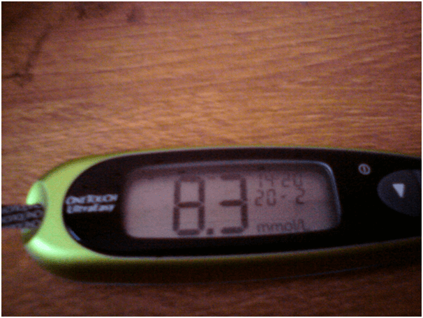
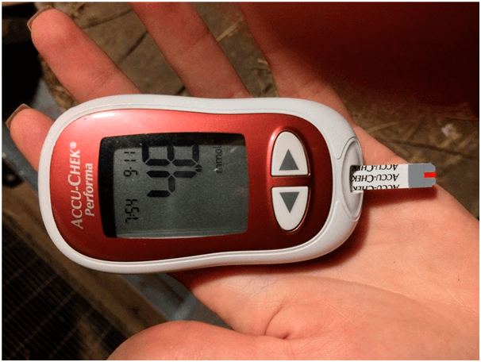

БИЗНЕС от БОЛЕСТТА:
Ще научите за ДИАБЕТА всичко, което беше скрито
в продължение на много
години
Категория: Полезни статии за диабетика 
Здравейте! Казвам се Андрей Стоянов.
Никога не съм писал отзиви, но реших да го направя за такива хора като мен, болни от диабет. Защото поради медицинска небрежност едва не умрях.
Аз съм на 35 години, имам съпруга и две деца. Работя като готвач в училищен стол. Преди десет години ми поставиха диагноза - диабет от 2-ри тип. През цялото време се чувствах уморен, не можех да се храня нормално, принуждавайки се да ям само постно. С моята работа! Освен това постоянно трябваше да следя за нивото на кръвната захар.

Денят ми започваше с убождането на пръста ми и измерването на кръвната захар. Харчих хиляди евро на месец за лекарства. И това при заплатата ми на готвач! Катастрофа! Също така и ЦЕНИТЕ на хапчета в България се ВДИГНАХА през последните години.
Наложи се да продам вилата и колата си и да взема заем, за да платя лечението и да купя тестове... Едва не се вкарах в гроба, пиейки всичко това. Постоянно ми се гадеше, и за няколко месеца много надебелях. И станах бреме за семейството си. Живях в страх, че и децата ми ще имат диабет от 2-ри тип.
Мислех, че по-лошото от това не може да бъде, докато един ден случайно не изложих на риск целия си живот.
Купих си нови обувки и докато ги разтъпквах си разтрих краката до мазоли. След известно време те се превърнаха в рани, които не зарастват. Не чувствах болка, но ми беше трудно да ходя, появи се парене в стъпалата, затова отидох на лекар. Той каза, че има голяма вероятност да получа гангрена, а това означава само едно - мога да ОСТАНА БЕЗ КРАК!!!

От чутото ме хвърли в студена пот. Знаех, че гангрената е доста често срещана при диабетиците, но не мислех, че ще се сблъскам с нея. Как ще живея и работя без крака си!? От лекарският кабинет излязох с огромен страх за живота си и... списък с лекарства за още десетина хиляди лева.
Същият ден, вечерта, се обадих по skype на един стар приятел от училище, той живее в Америка. Той ме изслуша за моето голямо нещастие, че имам здравословни проблеми и, че нямам достатъчно пари за лекарства. На свой ред ми каза, че в Америка подобна ситуация се случва на пазара за лекарства. Техните лекари също им препоръчват да купуват скъпи лекарства, които само влошават здравето. Защото, КОЛКОТО ПОВЕЧЕ БОЛНИ ИМА, толкова ПОВЕЧЕ ТАБЛЕТКИ СА НЕОБХОДИМИ. А продажбата им носи невероятен доход на фармацевтичните фирми. Мисля, че България по този въпрос също не прави изключение, само че всички старателно мълчат за това.

Попитах приятеля си, той знае ли с какво лекуват диабета в Америка и той ми каза, че всички сега се отказват от обикновените лекарства в полза на естествените добавки. Тяхната ефективност е няколко пъти по-висока и те не причиняват вреда на организма, за разлика от таблетките. Почти всички известни лекарства за диабет при тях се заместват със специалното средство - «» . При нас, в България, аз дори не съм чувал за такова, така че го помолих да ми изпрати линк на този продукт.
Разбрах, че "" е органично средство под формата на прах. Неговият основен компонент е инулин, получен от растението Heliánthus tuberósus. То от векове се използва в източната медицина за нормализиране нивото на кръвната захар. След многобройни изследвания съвременната наука е доказала ефективността на този полизахарид в борбата срещу диабета от втори тип. И най-важното е, че инулинът в комбинация с L-аргинин помага за възстановяването на клетките на панкреаса, произвеждащи инсулин!

”” - това е единствената добавка на основата на този екстракт. При диабет от 2-ри тип тя намалява кръвната захар, намалява или напълно премахва (при повече от 20% от болните) необходимостта от хипогликемични лекарства, укрепва кръвоносните съдове и регулира обмяната на веществата.
"" се препоръчва да се използва както в комбинация с вече
съществуващата лекарствена терапия, така и като ПРОФИЛАКТИКА, ако има риск от поява на болестта.
Реших да опитам””, защото по това време нямаше какво да губя, и го поръчах направо
от сайта на производителя.
В крайна сметка, сутрин си наливах чаша топла вода, разтварях една чаена лъжичка, без връх, от праха и го пих на малки глътки. Честно казано, не вярвах в чудо. Но напразно… След една седмица забелязах, че започнах да се уморявам по-малко, постепенно започнах да ям любимата си храна. Нивото на кръвната захар влезе в нормата (преди да пия «» нивото на захарта в кръвта на гладно беше 9,6, след две седмици на пиене на пълен стомах е 5,4 ) и раните на крака ми заздравяха. Дори не говоря за теглото. Свалих 4,5 кг!
Не можех да повярвам на резултатите си... Ето това е решението на проблема за пациенти с диабет от 2-ри тип. Изчезна болката и изтръпването, тревогата относно това, какво ям. Не ме е страх от операции и инжекции. ВЕЧЕ НЯМА НУЖДА ДА КУПУВАМ ЕДНА КАМАРА ХАПЧЕТА. Аз победих диабета, без продуктите на лъжливите фармацевтични фирми и съветите на така наречените «експерти».

Веднага ще Ви кажа, че “” се продава само в интернет, тъй като индустрията не допуска добавката на пазара и по всякакъв начин се опитва да намали продажбите й. Не забравяйте, че фармацевтичните фирми не гледат на Вас като на пациент, които може да бъде излекуван .. Виждат Ви като клиент за цял живот.
А “” СПЕСТЯВА вашите стотици хиляди, които би трябвало да дадете за този куп лекарства на фармацевтичните фирми. Бъдете внимателни, в България понякога попадат фалшификати. Поръчвайте от ЕДИНСТВЕНИЯ официалното дилър в България, той гарантира качеството.

Надявам се, че историята ми ще бъде от полза и ще спаси повече от един живот. Бъдете здрави!
Коментари:
На тези, с белите манти, само им дай да режат! Един познат лекар ми препоръча това средство ЗА ПРОФИЛАКТИКА. Казват, че сега «» е най-доброто лекарство за диабет. Вижте, за себе си мога да кажа, че до вземането на препарата захарта на гладно ми беше 8.7, а след месец – 5.9 СЛЕД ХРАНЕНЕ! Продължавам да го пия.
Благодаря Ви, че написахте тази статия. Ние с мъжа ми вече бяхме загубили надежда... Прочетох, поръчах от този сайт. След няколко седмици той отиде да се изследва - от 7.9 инсулина му стана 4.8!!!
Също искам да напиша, мислех си, че е поредната измама, докато сам не се уверих. Пих го цял месец. Преди да вземам това лекарство инсулина на гладно ми беше 9.8, след месец на пълен корем е 5.9. Живея здраво!
Здравейте, казвам се Елена. Аз не страдам от захарен диабет. Но баща ми е диабетик от тип 2 в продължение на 15 години. Кажете ми, как мога да се боря с този проблем? Много обичам баща си, и му желая дълги години живот, просто не знам какво ще правя ако изведнъж...Дайте съвет как да му помогна, ще съм Ви много благодарна
Опитайте се да му дадете преди хранене заедно с лекарствата му чаша топла вода с « ». Той не премахва обичайните лекарства, но със сигурност ще помогне да свалите захарта!
Баща ми има подобен проблем, само че той той не си инжектира инсулин, пие само хапчета. Той започна да слуша майка ми, да спазва диета и започна да взима тази добавка, когато спря да се чувства пръстите на крака си...
Икономично средство! Ние бяхме затънали до шия в дългове, лечението на сина ми беше много скъпо. На работа една позната ме посъветва, вземете да опитате с “”. Не вярвах, че това ще промени нищо, но никога не се знае. Синчето ми сега е здраво. Представяте ли си, от 9.7 инсулина спадна до 5.9!
Аз също имах диабет от 2-ри тип и бях бреме за семейството си. Сестра ми е медицинско лице и ми намери сайт, където подробно е описано действието “” и неговия положителен ефект. Ние веднага поръчахме тази добавка, тя направо ме върна към нормалния начин на живот!
Брат ми страда от диабет от 2-ри тип. Отчаяна съм, но поръчах. Последната ми надежда беше оправдана! Захарта 2 часа след хранене беше 9.8, а след една седмица на лечение на ПРАЗЕН стомах стана 5.3! Ето ссылка, от къде поръчах “”.
Работя като лекар в частна клиника. Предлагаха ми да продавам лекарства на пациентите срещу %, но как така... Майка ми боледуваше от диабет от 2 тип, докато аз по метода на пробата и грешката не намерих наистина работещо средство. Резултатите са такива: до взимането на «» захарта на гладно беше 8.7. След 3 месеца нп вземане на лекарството - 5.9. Преди да започне да пие лекарството кръвната захар 2 часа след хранене беше 9.8, а след 3 месеца 2 часа след хранене - 5.2. Мисля, че скоро ще се откажем от всички лекарства.
Лекарите са мръсници, само гледат от къде да отскубнат!!!!! Колко вече може да се изписват скъпи хапчета, когато има евтини аналози!?
Къде бяхте по-рано с вашата статия… Болен съм от диабет… :(
Не се отчайвайте! На мен «» ми помага. Върху себе си съм го проверила! Пийте тази добавка сутрин заедно с основните медикаменти за профилактика и ще Ви стане по-леко
А как как се пие този ваш “”?
Аз наливах една чаша гореща вода, разреждах я със студена, за да стане топла, след това добавях една чаена лъжица с връх “”, разбърквах и пиех сутрин на празен стомах. Елементарно:)
А пък аз сутрин вместо кафе го пих )) Намалява нивото на инсулина. Преди три седмици сутрин ми беше 7.6 , а сега като го измерих- 5.2. Ето така))
Който е пил “”, кажете, какво съдържа?
Поръчах си го, на опаковката в състава са изброени: фибрегам, инулин, лимонена киселина, витамини В6 и В1. Мисля си, че всичко е полезно, по-лошо със сигурност няма да стане.
Страхотно е, че има такава възможност! Никога не съм разбирала, защо трябва да се купуват лекарства по луди цени, когато има и евтини лекарства. Пенсионирам се, не мога много да се изхвърлям в аптеката, затова, да, добре е да слушате лекарите в бели халати, но трябва и да мислите с главата си
Показах на един приятел, който е лекар, “”, той прочете за него и беше много учуден, че такова нещо се продава у нас, в България! Той каза, че всички компоненти наистина имат благотворен ефект върху здравето и понижават нивото на инсулина в кръвта. За диабетиците това лекарство може да замени напълно цялата им аптечка.
Моля Ви, Андрей, напишите какви са резултатите Ви
Взимах го две седмици. от 7.1 захарта падна до 4.8. Определено трябва да продължа!!!